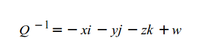

Урок 15 - Управление камерой - часть 2
В этом уроке мы завершим реализацию камеры добавив управление направлением обзора. Есть несколько различных степеней свободы, которые связаны с разработкой камеры. Мы собираемся дать тот же тип управления, что и используется в шутерах (или других играх от первого лица). Это значит, что у нас будет возможность поворачивать камеру на 360 градусов (вокруг вертикальной оси, Y), что соответствует повороту головы влево или вправо, а полный круг завершается поворотом всего тела. К тому же добавим возможность наклонять камеру вверх и вниз для лучшего обзора. Мы будем не в состоянии повернуть камеру вверх больше чем на 90 градусов, что бы увидеть события за спиной потребуется совершить вращение вокруг Y. Такие степени свободы не подойдут для симулятора полетов, но в данной серии уроков это нас не волнует. В любом случае мы будем иметь камеру, которой удобно исследовать наш 3D мир, который мы будем расширять в ближайших уроках.
Следующее противовоздушное оружие второй мировой войны продемонстрирует нам тип камеры, которую мы собираемся разработать:

У пушки 2 управляющих оси:
- Она может поворачиваться на 360 градусов вокруг вектора (0,1,0). Этот угол называется 'горизонтальным углом', а вектор 'вертикальной осью'.
- Она может наклоняться вверх и вниз вокруг вектора, параллельного земле. Это движение ограничено, пушка не может провернуться на полный круг. Этот угол называется 'вертикальным углом', а вектор 'горизонтальной осью'. Заметим, что вертикальная ось постоянна (0,1,0), а вот горизонтальная меняется и всегда перпендикулярна стволу пушки. Это ключевой момент для понимании того, как именно будут проводиться математические подсчеты.
Наша задача - следовать движениям мыши, если она перемещается влево/вправо, то меняем горизонтальный угол, а вертикальный изменяем в том случае, когда она движется вверх/вниз. Получение этих углов позволит нам задавать вектор направления и верхний вектор.
Вращение вектора направления на горизонтальный угол довольно просто. Используя простые правила тригонометрии мы можем увидеть, что Z координата это синус горизонтального угла, а X - косинус (на данный момент камера стоит ровно, так что Y равен 0). В уроке 7 приведена диаграмма, которая поможет разобраться.
Поворот вектора направления на вертикальный угол более сложный, так как вращается не только камера, но и ее горизонтальная ось. Горизонтальная ось может быть найдена векторным произведением вертикальной оси и вектором направления, после того, как он будет повернут на горизонтальный угол, но вращение вокруг произвольного вектора (подъем пушки вверх и вниз) может быть довольно сложно.
К счастью, у нас есть простое математическое решение для этой проблемы - кватернионы. Кватернионы были открыты в 1843 году Уильямом Гамильтоном, ирландским математиком, и они основаны на комплексных числах. Кватернион 'Q' определяется как:

Где i, j и k комплексные числа, и для них справедливо равенство:

На практике мы указываем кватернион как 4-вектор Q(x, y, z, w). Сопряжение кватерниону 'Q' выглядит так:

Нормирование кватерниона аналогично такой же операции для вектора. Я собираюсь объяснить шаги, необходимые для вращения вектора вокруг произвольного вектора, используя кватернионы. Более подробная математическая основа может быть найдена в сети.
В целом функция для подсчета кватерниона 'W', который представляет повернутый вектор 'V' на угол 'a', такова:
Где Q - это кватернион вращения, определенный так:

После подсчета 'W' повернутый вектор выглядит довольно просто (W.x,W.y,W.z). Важно заметить, что первое действие в подсчете 'W' это умножение 'Q' на 'V', что является умножением кватерниона на вектор, и результат это кватернион, и после нам требуется умножение кватерниона на кватернион (результат Q*V умножается на кватернион, обратный 'Q'). Эти виды умножения не одинаковые. Файл math_3d.cpp содержит представления этих операции.
Мы должны регулярно обновлять значения горизонтального и вертикального углов в случае, если пользователь передвинул мышь внутри экрана, и нам нужно решить как инициализировать это движение. Логично было бы изменять их согласно углу, который мы получаем от камеры. Давайте начнем с горизонтального угла. Посмотрим на диаграмму, на которой изображена плоскость XZ с видом сверху:
Наш вектор {x, z}, и мы хотим найти способ получить горизонтальный угол, представленный углом α (координата y имеет отношение только к вертикальному углу). Так как радиус окружности равен 1, то легко заметить, что sin(α) - это координата z. Согласно этому, нахождение arcsin(z) и будет нашим углом α. И все? Нет, не совсем! Так как z изменяется в промежутке [-1,1], то результат arcsin(z) изменяется в промежутке [-90°, 90°], всего 180°, а горизонтальный угол должен меняться по всей окружности, т.е. 360°. К тому же, наш кватернион вращает по часовой стрелке. Это значит, что когда мы вращаем, например, точку {1, 0} на 90° кватернионом, то она переместится в {0, -1} с z равным -1, а это в другую сторону(т.е.хотели влево, а получили - вправо). ИМХО, самый простой путь получить значение arcsin(z) используя положительные значение z, и сочетая результат с координатной четвертью, в которой расположен вектор. Для примера, если вектор направления - {0, 1}, то arcsin(1) равен 90°. Вычтем результат из 360°, получим 270°. Если ограничить область определения arcsin оттрезком [0, 1], то область значений будет лежать в [0°, 90°]. Комбинируя это с определённой координатной четвертью - получим итоговое значение горизонтального угла.
Вычисление вертикального угла немного проще. Мы собираемся ограничить наклон от -90° (смотрим вверх) до +90° (направлена вниз). Это значит, что нам требуется только отрицательное значение arcsin от Y координаты вектора направления. Когда Y равен 1 (смотрим вверх) arcsin равен 90°, т.е. нужно обратить знак. Когда Y равен -1 (смотрим вниз) arcsin равен -90°, но если обратить знак, то получим +90°. Если у вас затруднения посмотрите на диаграмму еще раз и замените Z на Y, а X на Z.
Прямиком к коду!
camera.cpp:41
Camera::Camera(int winWidth, int winHeight, const Vector3f& pos, const Vector3f& target, const Vector3f& up)
: m_MARGIN(winWidth / 3)
, m_pos(pos)
, m_target(target)
, m_up(up)
, m_winWidth(winWidth)
, m_winHeight(winHeight)
{
m_target.Normalize();
m_up.Normalize();
Init();
}
Конструктор камеры теперь принимает размеры окна. Нам это потребуется для перемещения курсора в центр экрана. Заметим, что мы вызываем функцию Init(), которая установит внутренние параметры камеры.
camera.cpp:55
void Camera::Init()
{
Vector3f hTarget(m_target.x, 0.0, m_target.z);
hTarget.Normalize();
if (hTarget.z >= 0.0f)
{
if (hTarget.x >= 0.0f)
m_hAngle = 360.0f - toDegree(asinf(hTarget.z));
else
if (hTarget.x < 0.0f)
m_hAngle = 180.0f + toDegree(asinf(hTarget.z));
}
else
if (hTarget.z < 0.0f)
{
if (hTarget.x >= 0.0f)
m_hAngle = toDegree(asinf((-1.f) * hTarget.z));
else
if (hTarget.x < 0.0f)
m_hAngle = 90.0f + toDegree(asinf((-1.f) * hTarget.z));
}
m_vAngle = (-1.f) * toDegree(asinf(m_target.y));
m_OnTEdge = false;
m_OnBEdge = false;
m_OnLEdge = false;
m_OnREdge = false;
m_mousePos.x = m_winWidth / 2;
m_mousePos.y = m_winHeight / 2;
glutWarpPointer(m_mousePos.x, m_mousePos.y);
}
В функции Init() мы начинаем с вычисления горизонтального угла. Мы создаем новый вектор, названый hTarget (направление по горизонтали), который является проекцией исходного вектора направления на плоскость XZ. Затем мы его нормируем (так как для выводов выше требуется единичный вектор на плоскости XZ). Затем мы проверяем какой кватернион соответствует вектору для конечного подсчета значения координаты Z. Далее мы подсчитываем вертикальный угол; сделать это гораздо проще.
У камеры появилось 4 новых параметра для проверки не касается ли курсор границ экрана. Мы собираемся добавить автоматическое вращение в этом случае, это позволит нам поворачиваться на все 360 градусов. Мы назначаем все флаги в false, так как курсор в начале в центре экрана. Следующие 2 строки кода вычисляют центр экрана (основывается на разрешении экрана), и новая функция glutWarpPointer перемещает курсор. Старт с курсором в центре экрана упростит нам жизнь.
camera.cpp:145
void Camera::OnMouse(int x, int y)
{
const int dx = x - m_mousePos.x;
const int dy = y - m_mousePos.y;
m_mousePos.x = x;
m_mousePos.y = y;
m_hAngle += dx / 20.0f;
m_vAngle += dy / 20.0f;
if (0 == dx) {
if (x <= m_MARGIN) {
m_onLEdge = true;
}
else if (x >= (m_winWidth - m_MARGIN)) {
m_onREdge = true;
}
}
else {
m_onLEdge = false;
m_onREdge = false;
}
if (0 == dy) {
if (y <= m_MARGIN) {
m_onTEdge = true;
}
else if (y >= (m_winHeight - m_MARGIN)) {
m_onBEdge = true;
}
}
else {
m_onTEdge = false;
m_onBEdge = false;
}
Update();
}
Эта функция используется что бы сообщить камере, что положение мыши изменилось. Входящие параметры - это новые координаты. Мы начинаем с подсчета разницы между новыми координатами и предыдущими по осям и X и Y. Дальше мы записываем новые значения для следующих вызовов функции. Мы обновляем текущие горизонтальные и вертикальные углы на эту разность в значениях. Я использую уменьшение (в 20 раз) для получения удобного мне движения, но для разных компьютеров могут потребоваться различные значения. Мы собираемся улучшить этот момент, когда введем частоту кадров в секунду.
После проверки мы обновляем значения 'm_OnEdge' согласно положению курсора. Граница по умолчанию равна 10 пикселям, и триггер сработает, если мышь будет достаточна близка к границе. Наконец, мы вызываем *Update() для перерасчета векторов направления и вектора вверх, основанных на новых горизонтальном и вертикальном углах.
camera.cpp:185
void Camera::OnRender()
{
bool shouldUpdate = false;
if (m_onLEdge) {
m_hAngle -= 0.1f;
shouldUpdate = true;
}
else if (m_onREdge) {
m_hAngle += 0.1f;
shouldUpdate = true;
}
if (m_onTEdge) {
if (m_vAngle > -90.0f) {
m_vAngle -= 0.1f;
shouldUpdate = true;
}
}
else if (m_onBEdge) {
if (m_vAngle < 90.0f) {
m_vAngle += 0.1f;
shouldUpdate = true;
}
}
if (shouldUpdate) {
Update();
}
}
Эта функция вызывается из главного цикла рендера. Она нам необходима для случаев, когда мышь не движется, но находится около одной из границ экрана. В этом случае мышь не будет передавать событий, но мы все еще хотим, что бы камера вращалась (до тех пор, пока курсор не отведут от края экрана). Мы проверяем не установлен ли хоть один из флагов, и если таковой найден, то изменится один из углов. В этом случае будет вызвана функция Update() для обновления векторов камеры. Если мышь не находится в окне, то нам передается это событие, и все флаги снимаются. Заметим, что вертикальный угол находится в пределах от -90 градусов и до +90 градусов. Это необходимо для запрета полного круга, когда мы наклоняемся вверх или вниз.
camera.cpp:216
void Camera::Update()
{
const Vector3f vAxis(0.0f, 1.0f, 0.0f);
Vector3f view(1.0f, 0.0f, 0.0f);
view.Rotate(m_hAngle, vAxis);
view.Normalize();
Vector3f hAxis = vAxis.Cross(view);
hAxis.Normalize();
view.Rotate(m_vAngle, hAxis);
m_target = view;
m_target.Normalize();
m_up = m_target.Cross(hAxis);
m_up.Normalize();
}
Эта функция обновляет значения векторов направления и вверх согласно горизонтальному и вертикальному углам. Мы начинаем с вектором обзора в "сброшенном" состоянии. Это значит, что он параллелен земле (вертикальный угол равен 0) и смотрит направо (горизонтальный угол равен 0 - смотри диаграмму выше). Мы устанавливаем вертикальную ось прямо вверх и вращаем вектор направления на горизонтальный угол относительно нее. В результате получаем вектор, который, в общем то, соответствует искомому, но имеет не правильную высоту (т.к. он принадлежит плоскости XZ). Совершив векторное произведение между этим вектором и вертикальной осью, мы получаем еще один вектор на плоскости XZ, но он будет перпендикулярен плоскости, образованной вертикальным вектором и вектором направления. Это наша новая горизонтальная ось, и настал момент вращать вектор вокруг нее на вертикальный угол. Результат - итоговый вектор направления, и мы записываем его в соответствующее место в классе. Теперь нам нужно исправить вектор вверх. Например, если камера смотрит поворачивается вверх, то вектор будет откланяться назад (он обязан быть под углом в 90 градусов с вектором направления). Это схоже с тем, как вы наклоняете голову, когда смотрите на небо. Новый вектор подсчитывается просто векторным произведением итоговым вектором направления и новым вектором вправо. Если вертикальный угол снова 0, тогда вектор направления возвращается на плоскость XZ, и вектор вверх обратно (0,1,0). Если вектор направления движется вверх или вниз, то вектор вверх наклоняется вперед / назад соответственно.
main.cpp:15
glutGameModeString("1920x1200@32");
glutEnterGameMode();
Эта функция glut'а разрешает вашему приложению запускаться в полноэкранном режиме, называемом как 'игровой режим'. Это упростит поворот на 360 градусов, так как все что вам требуется сделать, это передвинуть курсор к одному из краев экрана. Заметим, что разрешение и количество цветов задаются через строку в функции. 32 бита для пикселя обеспечивают наибольшее количество цветов для рендера.
main.cpp:268
pGameCamera = new Camera(WINDOW_WIDTH, WINDOW_HEIGHT);
Камера теперь автоматически установится в нужное положение, так как в конструкторе она установит положение курсора в центре экрана (используя функцию glutWarpPointer). Этот вызов вернет код ошибки если glut еще не был инициализирован.
main.cpp:133
glutPassiveMotionFunc(PassiveMouseCB);
glutKeyboardFunc(KeyboardCB);
Мы регистрируем 2 новых функции обратного вызова. Одна для мыши и другая для нажатия специальных клавиш (это клавиши направление и функциональные клавиши). Пассивное движение означает, что мышь движется без нажатия каких-либо кнопок.
main.cpp:112
static void KeyboardCB(unsigned char Key, int x, int y)
{
switch (Key) {
case 0x1b: // Esc
exit(0);
}
}
static void PassiveMouseCB(int x, int y)
{
pGameCamera->OnMouse(x, y);
}
Теперь мы используем полноэкранный режим, поэтому может возникнуть проблема с выходом из приложения. При нажатии 'Esc' мы выходим. Обратный вызов для мыши просто передает ее координаты в камеру.
main.cpp:66
static void RenderSceneCB()
{
pGameCamera->OnRender();
}
Где-то в функции рендера мы должны вызвать камеру. Это дает ей шанс для действий, если мышь не двигалась, но находится около границы экрана.